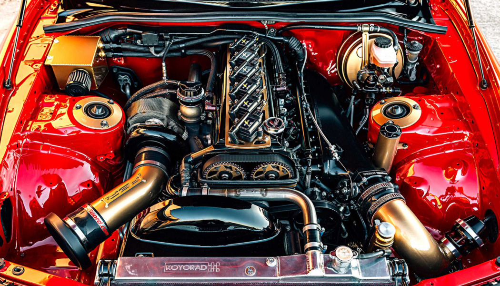
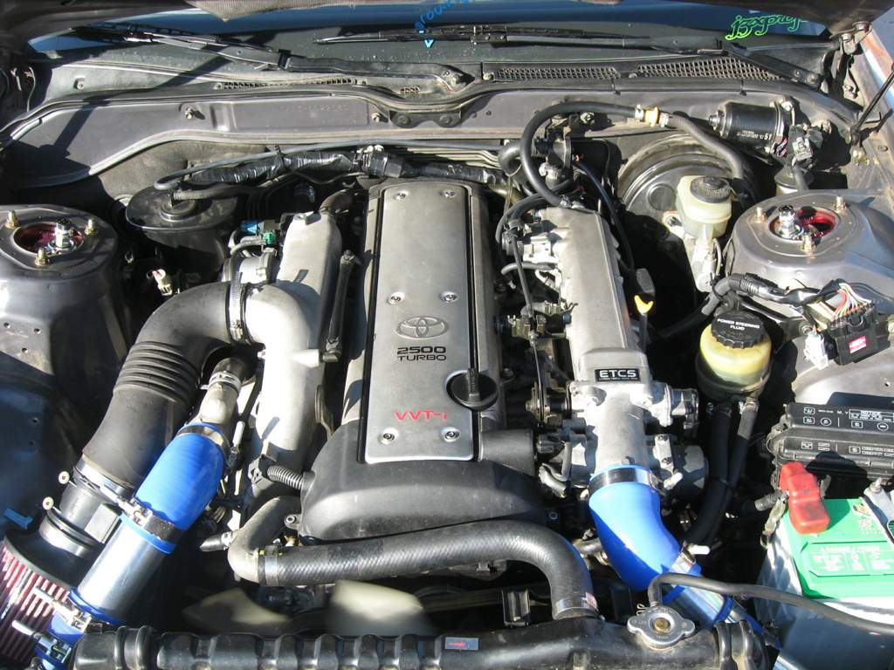
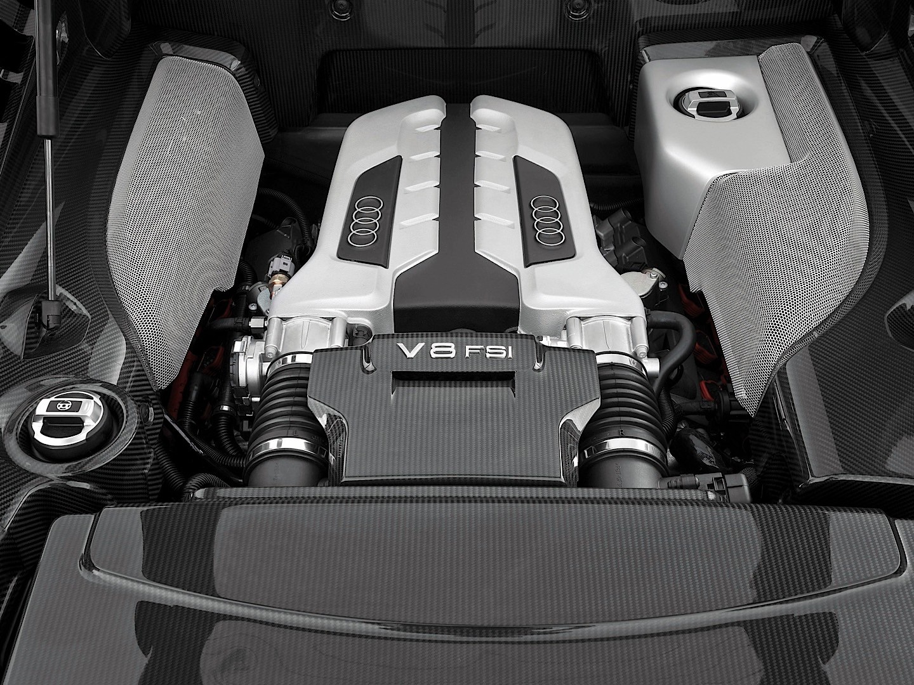

Swap de motor
Un cambio de motor es un tema delicado, merece tiempo, estudio, atención y días de trabajo. En StockGT disponemos de este servicio, además tenemos unas muy buenas reseñas por parte de los clientes.
AL HACER UN CAMBIO DE MOTOR SE MODIFICARÁ LA ESTRUCTURA INTERNA DEL VEHÍCULO PARA ACOMODAR EL NUEVO MOTOR (SUELE SER MÁS GRANDE)
ECHA UN VISTAZO A NUESTROS PRODUCTOS



2jZ
Dedicado a todos los fans de Toyota que alguna vez soñaron con este motor, pues
hoy en StockGT lo tenemos a la venta. 6 cilindros en línea, bien sopladitos por dos
pedazo de turbos, una bestia en toda regla. Recuerda, el motor nunca será tuyo, sino
del banco.
8.999,99€
1jZ
Igual que el de arriba, pero esta vez es el 1jz, la ventaja que tienes al adquirir este
es que igual luego, a lo mejor te queda para seguir comiendo durante un par de meses, pero
te volvemos a recordar: el motor nunca será tuyo, sino del banco.
5.459,99€
V8 TDI
El gordo, el obeso, el grande, el abusón, el papá, la clase padre, la clase abstracta, el mejor
Superman, el dragón de fuego, Goku, el misil de Spacex, la bomba atómica, la supernova. Sin duda
el más gordo de la lista, una burrada que por desgracia solamente se aplica a coches muy pesados
y que no aprovechan del todo la potencia que este bicho da.
19.399,95€